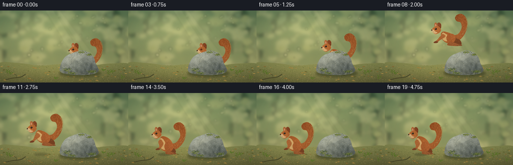
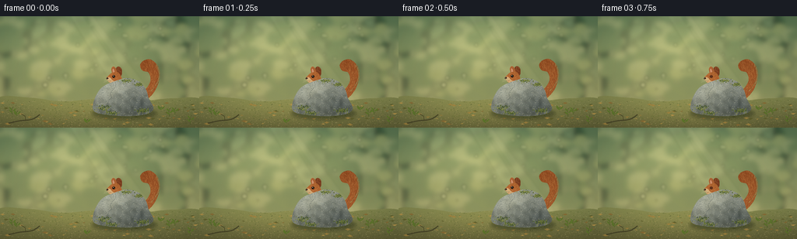

CODING AGENTS AS PIXEL WORLD MODELS
traex/GPT-6.1-Sol · dynamic_spatial_relationship_0023
点击播放 · 原生 RGB 像素
逐轮保存的候选
回放视频、检查图与代码变化。
每份候选均可单独播放。实际图片检查记录在下方工具轨迹中。
候选 01播放与检查图
点击播放 · 原生 RGB 像素


展开代码变化
--- 上一保存版本
+++ 本次保存版本
@@ -0,0 +1,244 @@
+from pathlib import Path
+import math
+import numpy as np
+from PIL import Image, ImageDraw, ImageFilter
+import artifact_io
+
+ROOT=Path(__file__).resolve().parent
+S=4
+W,H=256*S,144*S
+rng=np.random.default_rng(247)
+
+def spline(points, closed=False, steps=12):
+ p=np.array(points,dtype=float)
+ if closed: q=np.vstack([p[-1],p,p[0],p[1]])
+ else: q=np.vstack([p[0],p,p[-1]])
+ out=[]
+ for i in range(1,len(q)-2):
+ a,b,c,d=q[i-1:i+3]
+ for t in np.linspace(0,1,steps,endpoint=False):
+ out.append(tuple(.5*((2*b)+(-a+c)*t+(2*a-5*b+4*c-d)*t*t+(-a+3*b-3*c+d)*t*t*t)))
+ if not closed: out.append(tuple(p[-1]))
+ return out
+
+def poly(draw,pts,fill): draw.polygon([(round(x*S),round(y*S)) for x,y in pts],fill=fill)
+def line(draw,pts,fill,width=1): draw.line([(round(x*S),round(y*S)) for x,y in pts],fill=fill,width=max(1,round(width*S)))
+def ell(draw,box,fill): draw.ellipse(tuple(round(v*S) for v in box),fill=fill)
+
+# Luminous woodland, deliberately quiet behind the foreground action.
+yy,xx=np.mgrid[0:H,0:W]; x=xx/S; y=yy/S
+upper=np.array([96,122,87]); lower=np.array([166,164,106])
+t=np.clip(y/120,0,1)[...,None]
+bg=upper*(1-t)+lower*t
+light=np.exp(-((x-94)**2/8500+(y-36)**2/1700))
+bg+=light[...,None]*np.array([56,47,28])
+noise=rng.normal(0,1.3,(H,W,1)); bg=np.uint8(np.clip(bg+noise,0,255))
+background=Image.fromarray(bg,'RGB').convert('RGBA')
+far=Image.new('RGBA',(W,H)); fd=ImageDraw.Draw(far)
+for tx,tw,col in [(9,13,(47,67,48,150)),(35,8,(76,85,59,120)),(64,6,(95,103,65,90)),(205,12,(67,86,55,140)),(235,18,(39,64,43,175)),(166,7,(96,111,72,100)),(117,5,(119,125,84,65))]:
+ poly(fd,[(tx-tw/2,-5),(tx+tw/2,-5),(tx+tw*.18,107),(tx-tw*.18,110)],col)
+ line(fd,[(tx,55),(tx-22,29),(tx-40,13)],col,tw*.23)
+ line(fd,[(tx,41),(tx+27,21),(tx+38,1)],col,tw*.17)
+for _ in range(170):
+ bx=float(rng.uniform(-10,266)); by=float(rng.uniform(-5,109)); r=float(rng.uniform(3,17))
+ c=[(39,72,41,45),(79,103,53,55),(195,190,110,60),(220,209,143,53),(55,88,48,45)][int(rng.integers(5))]
+ ell(fd,(bx-r,by-r*.65,bx+r,by+r*.65),c)
+far=far.filter(ImageFilter.GaussianBlur(3.1*S))
+background=Image.alpha_composite(background,far)
+# Sun spots / diffuse shafts.
+glow=Image.new('RGBA',(W,H)); gd=ImageDraw.Draw(glow)
+for _ in range(35):
+ bx=rng.uniform(52,218); by=rng.uniform(6,97); r=rng.uniform(.8,3.3)
+ ell(gd,(bx-r,by-r,bx+r,by+r),(245,236,178,int(rng.uniform(22,65))))
+poly(gd,[(90,0),(107,0),(181,116),(161,116)],(244,236,177,16))
+poly(gd,[(111,0),(120,0),(207,116),(190,116)],(248,235,179,13))
+background=Image.alpha_composite(background,glow.filter(ImageFilter.GaussianBlur(1.4*S)))
+# Forest-floor gradient, textured with moss and fine earth granules.
+groundmask=Image.new('L',(W,H)); md=ImageDraw.Draw(groundmask)
+poly(md,spline([(-5,107),(37,105),(80,110),(125,107),(175,110),(221,106),(261,109),(264,150),(-6,150)],True),255)
+gt=np.clip((y-105)/39,0,1)[...,None]
+g=np.array([123,128,75])*(1-gt)+np.array([92,91,52])*gt
+g=np.broadcast_to(g,(H,W,3)).copy()
+g+=np.exp(-((x-108)**2/9000+(y-119)**2/600))[...,None]*np.array([25,21,10])
+grnoise=rng.normal(0,2.6,(H,W,1)); g+=grnoise
+floor=Image.fromarray(np.uint8(np.clip(g,0,255))).convert('RGBA');floor.putalpha(groundmask)
+background=Image.alpha_composite(background,floor)
+floordetail=Image.new('RGBA',(W,H)); d=ImageDraw.Draw(floordetail)
+for _ in range(1400):
+ px=float(rng.uniform(0,256)); py=float(rng.uniform(108,144)); r=float(rng.uniform(.12,.7))
+ c=[(178,163,100,100),(55,67,34,100),(94,109,46,150),(190,178,123,100)][int(rng.integers(4))]
+ ell(d,(px-r,py-r*.4,px+r,py+r*.4),c)
+for _ in range(70):
+ px=float(rng.uniform(0,256)); py=float(rng.uniform(111,146)); le=float(rng.uniform(1.3,4)); angle=float(rng.uniform(-1,1))
+ color=[(142,107,51,220),(170,135,64,220),(93,93,41,230),(189,153,77,230)][int(rng.integers(4))]
+ poly(d,[(px-le,py),(px,py-le*.28),(px+le,py+angle),(px,py+le*.4)],color)
+ line(d,[(px-le*.75,py),(px+le*.75,py+angle*.7)],(82,78,39,100),.15)
+# A quiet fallen twig at the frame's lower edge.
+line(d,spline([(11,138),(25,135),(41,133),(51,127)]),(65,62,36,220),1.4)
+line(d,[(33,134),(32,129),(27,126)],(70,65,37,220),.7)
+background=Image.alpha_composite(background,floordetail)
+
+# Rock is a persistent foreground occluder, not a moving prop.
+rock=Image.new('RGBA',(W,H)); rm=Image.new('L',(W,H)); rd=ImageDraw.Draw(rm)
+outline=spline([(119,118),(123,103),(132,91),(147,84),(163,80),(178,84),(187,94),(191,106),(197,119),(189,126),(167,129),(144,128),(125,125)],True)
+poly(rd,outline,255)
+# Wide low contact shadow.
+rs=Image.new('RGBA',(W,H)); rsd=ImageDraw.Draw(rs)
+ell(rsd,(118,118,201,133),(25,36,19,110));rs=rs.filter(ImageFilter.GaussianBlur(2.3*S))
+rf=np.ones((H,W,3))*np.array([118,123,112])
+rf+=((110-y)*.92+(151-x)*.20)[...,None]
+rf+=np.exp(-((x-143)**2/470+(y-94)**2/220))[...,None]*np.array([33,32,26])
+rf+=np.exp(-((x-180)**2/200+(y-115)**2/90))[...,None]*np.array([-19,-17,-12])
+small=rng.normal(0,5.0,(H,W))
+coarse=np.asarray(Image.fromarray(np.uint8(rng.uniform(0,255,(36,64)))).resize((W,H),Image.Resampling.BICUBIC)).astype(float)-128
+rf+=(small+coarse*.11)[...,None]
+rock=Image.fromarray(np.uint8(np.clip(rf,0,255))).convert('RGBA');rock.putalpha(rm)
+rockdetails=Image.new('RGBA',(W,H));d=ImageDraw.Draw(rockdetails)
+poly(d,spline([(122,112),(132,96),(149,91),(162,84),(178,85),(165,94),(147,100),(134,115)],True),(190,186,157,39))
+poly(d,[(149,100),(168,98),(179,105),(191,119),(174,126),(150,125)],(60,67,65,30))
+line(d,spline([(148,85),(148,91),(142,99),(143,105),(135,111)]),(69,77,72,110),.5)
+line(d,spline([(180,92),(170,98),(169,105),(164,109)]),(67,76,73,100),.6)
+line(d,spline([(126,119),(142,117),(151,120),(158,127)]),(72,80,73,85),.4)
+line(d,spline([(148,92),(143,99),(144,104)]),(227,218,185,85),.3)
+for _ in range(2000):
+ px=float(rng.uniform(121,198)); py=float(rng.uniform(80,130))
+ if rm.getpixel((int(px*S),int(py*S)))==0: continue
+ r=float(rng.uniform(.08,.45)); c=[(60,69,64,65),(225,220,186,83),(89,99,89,70)][int(rng.integers(3))]
+ ell(d,(px-r,py-r*.6,px+r,py+r*.6),c)
+# Lichen and moss cling to the top and lower rim rather than covering its stone identity.
+for cx,cy,rx,ry in [(164,83,10,2.4),(178,88,5,2),(133,119,10,4),(184,122,9,3),(143,125,7,2)]:
+ for _ in range(100):
+ px=float(rng.normal(cx,rx*.48));py=float(rng.normal(cy,ry*.5))
+ if not 0<=px<256 or not 0<=py<144 or rm.getpixel((int(px*S),int(py*S)))==0:continue
+ r=rng.uniform(.15,.9)
+ col=[(74,90,36,210),(114,128,48,205),(147,148,71,210),(60,79,36,220)][int(rng.integers(4))]
+ ell(d,(px-r,py-r*.6,px+r,py+r*.6),col)
+# Clip all stone markings.
+rockdetails.putalpha(Image.fromarray((np.asarray(rockdetails.getchannel('A')).astype(float)*np.asarray(rm)/255).astype('uint8')))
+rock=Image.alpha_composite(rock,rockdetails)
+
+# The animal is rendered as layered softly shaded anatomy with directional guard hairs.
+SW,SH=112*S,92*S
+OX,OY=40,77
+
+def squirrel(pose=0,compress=0,tailwave=0,blink=False):
+ p=pose
+ canvas=Image.new('RGBA',(SW,SH))
+ rr=np.random.default_rng(543)
+ sy,sx=np.mgrid[0:SH,0:SW]; lx=sx/S-OX;ly=sy/S-OY
+ def P(pts):return [(a+OX,b+OY) for a,b in pts]
+ def shape(pts,base,kind='fur',hair=200,axis=(0,-1), closed=True):
+ nonlocal canvas
+ mask=Image.new('L',(SW,SH));md=ImageDraw.Draw(mask)
+ coords=spline(pts,closed)
+ poly(md,P(coords),255)
+ ar=np.asarray(mask)
+ color=np.ones((SH,SW,3))*np.array(base)
+ # Directional soft light from upper-left, warm reddish guard hairs.
+ shade=11*np.sin((lx+ly*.28)/13)+8*np.cos((ly+24)/13)-lx*.16
+ shade+=rr.normal(0,2.4,(SH,SW))
+ color+=shade[...,None]*np.array([1,.82,.57])
+ lay=Image.fromarray(np.uint8(np.clip(color,0,255))).convert('RGBA');lay.putalpha(mask)
+ hairs=Image.new('RGBA',(SW,SH));hd=ImageDraw.Draw(hairs)
+ valid=np.argwhere(ar>0)
+ for _ in range(hair):
+ iy,ix=valid[int(rr.integers(len(valid)))];u=ix/S-OX;v=iy/S-OY
+ if kind=='tail':
+ ang=-1.7+.018*(v+40)+.018*(u-25)
+ length=rr.uniform(.9,3.2)
+ else:
+ ang=math.atan2(axis[1],axis[0])+rr.normal(0,.22);length=rr.uniform(.45,1.65)
+ end=(u+math.cos(ang)*length,v+math.sin(ang)*length)
+ col=(230,169,97,rr.integers(35,110).item()) if rr.random()<.57 else (79,43,22,rr.integers(35,90).item())
+ line(hd,P([(u,v),end]),col,.17)
+ hairs.putalpha(Image.fromarray((np.asarray(hairs.getchannel('A')).astype(float)*ar/255).astype('uint8')))
+ lay=Image.alpha_composite(lay,hairs); canvas=Image.alpha_composite(canvas,lay)
+ return mask
+ wave=tailwave
+ tail=[(9,-9),(24,-10),(37+wave,-23),(43+wave,-41),(41+wave,-54),(32+wave,-63),(23+wave,-62),(18+wave,-56),(21+wave,-49),(29+wave,-46),(31+wave,-35),(23,-23),(10,-19)]
+ shape(tail,(149,79,36),'tail',1000)
+ # A softly lit outer band accentuates the full, curled squirrel tail.
+ td=ImageDraw.Draw(canvas)
+ for _ in range(180):
+ tt=rr.uniform(0,1)
+ # Small independent guard hairs on the tail's upper-right contour.
+ cy=-56+tt*34;cx=(42+wave)-7*(abs(cy+43)/17)**2
+ line(td,P([(cx,cy),(cx+rr.uniform(.5,1.7),cy-rr.uniform(.3,1.8))]),(184,128,66,95),.18)
+ # Far legs, hindquarters, torso, lighter underside.
+ shape([(5,-17),(17+7*p,-13),(23+7*p,-5),(18+8*p,-2),(7,-7)],(107,57,29),hair=95,axis=(1,1))
+ shape([(11,-4),(20+7*p,-3),(24+7*p,-1),(22+7*p,.4),(10,-.2),(7,-2)],(126,73,39),hair=35,axis=(1,0))
+ body=[(-6,-35+7*p),(4,-34+8*p),(13,-27+5*p),(17,-17),(12,-8),(2,-5),(-8,-12),(-11,-23)]
+ shape(body,(165,91,42),hair=600,axis=(-.3,-1))
+ shape([(-10,-26+5*p),(-7,-32+6*p),(-1,-28+5*p),(2,-20),(1,-9),(-6,-11),(-11,-18)],(207,166,105),hair=180,axis=(0,1))
+ shape([(4,-23),(13,-23),(18,-17),(16,-8),(9,-5),(2,-9),(0,-16)],(159,85,41),hair=290,axis=(-.2,1))
+ # Near hind foot, very long toes characteristic of a squirrel.
+ hx=-14-5*p;hy=-39+8*p
+ shape([(6,-7),(13+5*p,-5),(18+7*p,-1),(15+7*p,1),(4,-.2),(2,-3)],(146,83,44),hair=55,axis=(1,0))
+ # Near arm and forepaw; extend left in the airborne pose.
+ ax=-9-8*p;ay=-15+3*p
+ shape([(-7,-29+6*p),(-12,-25+6*p),(ax-1,ay),(ax-5,ay+4),(ax-2,ay+6),(ax+3,ay+2),(-2,-21+3*p)],(170,100,52),hair=125,axis=(-.5,1))
+ shape([(ax-4,ay+3),(ax-8,ay+5),(ax-8,ay+6.7),(ax-3,ay+7),(ax+.5,ay+5)],(119,68,39),hair=25,axis=(-1,0))
+ # Ears behind the head, including pale inner skin.
+ shape([(hx+3,hy-3),(hx+1,hy-12),(hx+4,hy-15),(hx+8,hy-12),(hx+8,hy-4)],(132,69,37),hair=95,axis=(0,-1))
+ shape([(hx-2,hy-3),(hx-5,hy-11),(hx-3,hy-15),(hx+.4,hy-13),(hx+2,hy-6)],(178,104,56),hair=80,axis=(0,-1))
+ shape([(hx-2.6,hy-6),(hx-3.4,hy-11),(hx-2.2,hy-12),(hx-.5,hy-7)],(217,153,115),hair=10)
+ # Round cheek flowing into a tapered muzzle.
+ shape([(hx+7,hy-3),(hx+3,hy-8),(hx-4,hy-7),(hx-8,hy-4),(hx-11,hy),(hx-9,hy+4),(hx-3,hy+8),(hx+4,hy+6),(hx+8,hy+1)],(180,104,51),hair=270,axis=(-1,.1))
+ shape([(hx-11,hy),(hx-7,hy-1),(hx-3,hy+3),(hx+1,hy+5),(hx-3,hy+7),(hx-8,hy+5)],(218,176,123),hair=70,axis=(-1,.1))
+ dd=ImageDraw.Draw(canvas)
+ def e(box,c):ell(dd,tuple(v+(OX if i%2==0 else OY) for i,v in enumerate(box)),c)
+ # Glossy dark eye with a tiny stable catchlight.
+ ex,ey=hx-2.0,hy-2.2
+ e((ex-2.0,ey-1.9,ex+2.0,ey+1.9),(105,54,28,255))
+ if blink:
+ line(dd,P([(ex-1.5,ey),(ex+1.5,ey+.2)]),(34,26,17,255),.55)
+ else:
+ e((ex-1.5,ey-1.6,ex+1.5,ey+1.5),(23,20,14,255))
+ e((ex-.85,ey-1.0,ex-.1,ey-.25),(248,237,202,255))
+ e((ex+.55,ey+.45,ex+.9,ey+.8),(138,114,79,255))
+ e((hx-11.8,hy-.9,hx-9.1,hy+1.3),(45,31,23,255))
+ e((hx-11.4,hy-.8,hx-10.5,hy-.3),(172,136,99,255))
+ line(dd,P([(hx-10,hy+2.5),(hx-6.7,hy+3.5),(hx-5,hy+3.2)]),(94,59,35,200),.28)
+ for j in range(4):
+ line(dd,P([(hx-7,hy+2.7),(hx-13-j*.7,hy-.5+j*1.9)]),(228,216,171,150),.14)
+ for dx in [0,1.3,2.6]:
+ line(dd,P([(13+7*p+dx,-1),(15+7*p+dx,.8)]),(69,43,26,200),.18)
+ # Compression for crouch/landing; keep foot origin at the ground plane.
+ if compress:
+ nh=int(SH*(1-compress));canvas=canvas.resize((SW,nh),Image.Resampling.BICUBIC)
+ canv=Image.new('RGBA',(SW,SH));canv.paste(canvas,(0,int(OY*S*compress)));canvas=canv
+ return canvas
+
+foreground=Image.new('RGBA',(W,H));fd=ImageDraw.Draw(foreground)
+# Sprigs frame the action, while leaving the entire animal readable.
+for px,py,ht in [(16,127,10),(22,129,7),(218,130,12),(225,126,8),(245,140,13),(112,138,5),(207,121,4)]:
+ line(fd,spline([(px,py),(px-1,py-ht*.6),(px+1,py-ht)]),(65,85,33,220),.6)
+ for side,lev in [(-1,.35),(1,.53),(-1,.7)]:
+ bx=px+side*2.8;by=py-ht*lev
+ poly(fd,spline([(px,by+1),(bx,by-2),(bx+side*1.4,by-2.4),(bx,by+.2)],True),(91,116,41,230))
+
+motion=[(162,119,0,0),(162,119,0,0),(162,118.5,0,0),(161.7,119,0,0),(160,119,0,.10),(157,109,.5,0),(148,91,.85,0),(136,77,1,0),(123,70,1,0),(110,74,1,0),(96,85,.85,0),(82,105,.65,0),(74,123,.15,.15),(72,123,0,.08),(72,122,0,0),(72,122,0,0),(72,121.8,0,0),(72,122,0,0),(72,122,0,0),(72,122,0,0)]
+frames=[]
+for i,(posx,posy,pose,comp) in enumerate(motion):
+ scene=background.copy()
+ # The landing shadow remains on the ground and becomes darker on approach.
+ sh=Image.new('RGBA',(W,H));sd=ImageDraw.Draw(sh)
+ height=max(0,121-posy); alpha=int(75-height*.7);rad=13+height*.055
+ ell(sd,(posx-rad,122-2.2,posx+rad,125.5),(35,36,21,max(20,alpha)))
+ scene=Image.alpha_composite(scene,sh.filter(ImageFilter.GaussianBlur((1.2+height*.025)*S)))
+ scene=Image.alpha_composite(scene,rs)
+ animal=squirrel(pose,comp,tailwave=.7*math.sin(i*.63),blink=i in [3,17])
+ loc=(round((posx-OX)*S),round((posy-OY)*S))
+ # All early poses are behind the stone. Once the animal crosses its left
+ # silhouette it has no overlap, making the final spatial relation unambiguous.
+ scene.alpha_composite(animal,loc)
+ scene=Image.alpha_composite(scene,rock)
+ scene=Image.alpha_composite(scene,foreground)
+ # Gentle lens vignette and fine grain preserve a photographic/painterly look.
+ ar=np.asarray(scene.convert('RGB')).astype(float)
+ vig=np.clip(1-.11*((x-127)/170)**2-.06*((y-72)/100)**2,.83,1)
+ ar*=vig[...,None]
+ out=Image.fromarray(np.uint8(np.clip(ar,0,255))).resize((256,144),Image.Resampling.LANCZOS)
+ frames.append(np.asarray(out))
+artifact_io.save(np.stack(frames),ROOT)
+print('Saved',len(frames),'RGB frames at 256 x 144, 4 fps.')
可观测工具轨迹
实际执行的命令与返回图片。
命令 1exit 0
/bin/bash -lc "ls -la && cat prompt.txt && printf '\\n--- RULES ---\\n' && cat GENERATION_RULES.md && printf '\\n--- SPEC ---\\n' && cat task_spec.json"
命令 2exit 0
/bin/bash -lc "cat artifact_io.py && python - <<'PY'
import PIL,numpy
print('PIL',PIL.__version__)
PY"命令 3exit 0
/bin/bash -lc "cat > generate.py <<'PY'
from pathlib import Path
import math
import numpy as np
from PIL import Image, ImageDraw, ImageFilter
import artifact_io
ROOT=Path(__file__).resolve().parent
S=4
W,H=256*S,144*S
rng=np.random.default_rng(247)
def spline(points, closed=False, steps=12):
p=np.array(points,dtype=float)
if closed: q=np.vstack([p[-1],p,p[0],p[1]])
else: q=np.vstack([p[0],p,p[-1]])
out=[]
for i in range(1,len(q)-2):
a,b,c,d=q[i-1:i+3]
for t in np.linspace(0,1,steps,endpoint=False):
out.append(tuple(.5*((2*b)+(-a+c)*t+(2*a-5*b+4*c-d)*t*t+(-a+3*b-3*c+d)*t*t*t)))
if not closed: out.append(tuple(p[-1]))
return out
def poly(draw,pts,fill): draw.polygon([(round(x*S),round(y*S)) for x,y in pts],fill=fill)
def line(draw,pts,fill,width=1): draw.line([(round(x*S),round(y*S)) for x,y in pts],fill=fill,width=max(1,round(width*S)))
def ell(draw,box,fill): draw.ellipse(tuple(round(v*S) for v in box),fill=fill)
# Luminous woodland, deliberately quiet behind the foreground action.
yy,xx=np.mgrid[0:H,0:W]; x=xx/S; y=yy/S
upper=np.array([96,122,87]); lower=np.array([166,164,106])
t=np.clip(y/120,0,1)[...,None]
bg=upper*(1-t)+lower*t
light=np.exp(-((x-94)**2/8500+(y-36)**2/1700))
bg+=light[...,None]*np.array([56,47,28])
noise=rng.normal(0,1.3,(H,W,1)); bg=np.uint8(np.clip(bg+noise,0,255))
background=Image.fromarray(bg,'RGB').convert('RGBA')
far=Image.new('RGBA',(W,H)); fd=ImageDraw.Draw(far)
for tx,tw,col in [(9,13,(47,67,48,150)),(35,8,(76,85,59,120)),(64,6,(95,103,65,90)),(205,12,(67,86,55,140)),(235,18,(39,64,43,175)),(166,7,(96,111,72,100)),(117,5,(119,125,84,65))]:
poly(fd,[(tx-tw/2,-5),(tx+tw/2,-5),(tx+tw*.18,107),(tx-tw*.18,110)],col)
line(fd,[(tx,55),(tx-22,29),(tx-40,13)],col,tw*.23)
line(fd,[(tx,41),(tx+27,21),(tx+38,1)],col,tw*.17)
for _ in range(170):
bx=float(rng.uniform(-10,266)); by=float(rng.uniform(-5,109)); r=float(rng.uniform(3,17))
c=[(39,72,41,45),(79,103,53,55),(195,190,110,60),(220,209,143,53),(55,88,48,45)][int(rng.integers(5))]
ell(fd,(bx-r,by-r*.65,bx+r,by+r*.65),c)
far=far.filter(ImageFilter.GaussianBlur(3.1*S))
background=Image.alpha_composite(background,far)
# Sun spots / diffuse shafts.
glow=Image.new('RGBA',(W,H)); gd=ImageDraw.Draw(glow)
for _ in range(35):
bx=rng.uniform(52,218); by=rng.uniform(6,97); r=rng.uniform(.8,3.3)
ell(gd,(bx-r,by-r,bx+r,by+r),(245,236,178,int(rng.uniform(22,65))))
poly(gd,[(90,0),(107,0),(181,116),(161,116)],(244,236,177,16))
poly(gd,[(111,0),(120,0),(207,116),(190,116)],(248,235,179,13))
background=Image.alpha_composite(background,glow.filter(ImageFilter.GaussianBlur(1.4*S)))
# Forest-floor gradient, textured with moss and fine earth granules.
groundmask=Image.new('L',(W,H)); md=ImageDraw.Draw(groundmask)
poly(md,spline([(-5,107),(37,105),(80,110),(125,107),(175,110),(221,106),(261,109),(264,150),(-6,150)],True),255)
gt=np.clip((y-105)/39,0,1)[...,None]
g=np.array([123,128,75])*(1-gt)+np.array([92,91,52])*gt
g=np.broadcast_to(g,(H,W,3)).copy()
g+=np.exp(-((x-108)**2/9000+(y-119)**2/600))[...,None]*np.array([25,21,10])
grnoise=rng.normal(0,2.6,(H,W,1)); g+=grnoise
floor=Image.fromarray(np.uint8(np.clip(g,0,255))).convert('RGBA');floor.putalpha(groundmask)
background=Image.alpha_composite(background,floor)
floordetail=Image.new('RGBA',(W,H)); d=ImageDraw.Draw(floordetail)
for _ in range(1400):
px=float(rng.uniform(0,256)); py=float(rng.uniform(108,144)); r=float(rng.uniform(.12,.7))
c=[(178,163,100,100),(55,67,34,100),(94,109,46,150),(190,178,123,100)][int(rng.integers(4))]
ell(d,(px-r,py-r*.4,px+r,py+r*.4),c)
for _ in range(70):
px=float(rng.uniform(0,256)); py=float(rng.uniform(111,146)); le=float(rng.uniform(1.3,4)); angle=float(rng.uniform(-1,1))
color=[(142,107,51,220),(170,135,64,220),(93,93,41,230),(189,153,77,230)][int(rng.integers(4))]
poly(d,[(px-le,py),(px,py-le*.28),(px+le,py+angle),(px,py+le*.4)],color)
line(d,[(px-le*.75,py),(px+le*.75,py+angle*.7)],(82,78,39,100),.15)
# A quiet fallen twig at the frame's lower edge.
line(d,spline([(11,138),(25,135),(41,133),(51,127)]),(65,62,36,220),1.4)
line(d,[(33,134),(32,129),(27,126)],(70,65,37,220),.7)
background=Image.alpha_composite(background,floordetail)
# Rock is a persistent foreground occluder, not a moving prop.
rock=Image.new('RGBA',(W,H)); rm=Image.new('L',(W,H)); rd=ImageDraw.Draw(rm)
outline=spline([(119,118),(123,103),(132,91),(147,84),(163,80),(178,84),(187,94),(191,106),(197,119),(189,126),(167,129),(144,128),(125,125)],True)
poly(rd,outline,255)
# Wide low contact shadow.
rs=Image.new('RGBA',(W,H)); rsd=ImageDraw.Draw(rs)
ell(rsd,(118,118,201,133),(25,36,19,110));rs=rs.filter(ImageFilter.GaussianBlur(2.3*S))
rf=np.ones((H,W,3))*np.array([118,123,112])
rf+=((110-y)*.92+(151-x)*.20)[...,None]
rf+=np.exp(-((x-143)**2/470+(y-94)**2/220))[...,None]*np.array([33,32,26])
rf+=np.exp(-((x-180)**2/200+(y-115)**2/90))[...,None]*np.array([-19,-17,-12])
small=rng.normal(0,5.0,(H,W))
coarse=np.asarray(Image.fromarray(np.uint8(rng.uniform(0,255,(36,64)))).resize((W,H),Image.Resampling.BICUBIC)).astype(float)-128
rf+=(small+coarse*.11)[...,None]
rock=Image.fromarray(np.uint8(np.clip(rf,0,255))).convert('RGBA');rock.putalpha(rm)
rockdetails=Image.new('RGBA',(W,H));d=ImageDraw.Draw(rockdetails)
poly(d,spline([(122,112),(132,96),(149,91),(162,84),(178,85),(165,94),(147,100),(134,115)],True),(190,186,157,39))
poly(d,[(149,100),(168,98),(179,105),(191,119),(174,126),(150,125)],(60,67,65,30))
line(d,spline([(148,85),(148,91),(142,99),(143,105),(135,111)]),(69,77,72,110),.5)
line(d,spline([(180,92),(170,98),(169,105),(164,109)]),(67,76,73,100),.6)
line(d,spline([(126,119),(142,117),(151,120),(158,127)]),(72,80,73,85),.4)
line(d,spline([(148,92),(143,99),(144,104)]),(227,218,185,85),.3)
for _ in range(2000):
px=float(rng.uniform(121,198)); py=float(rng.uniform(80,130))
if rm.getpixel((int(px*S),int(py*S)))==0: continue
r=float(rng.uniform(.08,.45)); c=[(60,69,64,65),(225,220,186,83),(89,99,89,70)][int(rng.integers(3))]
ell(d,(px-r,py-r*.6,px+r,py+r*.6),c)
# Lichen and moss cling to the top and lower rim rather than covering its stone identity.
for cx,cy,rx,ry in [(164,83,10,2.4),(178,88,5,2),(133,119,10,4),(184,122,9,3),(143,125,7,2)]:
for _ in range(100):
px=float(rng.normal(cx,rx*.48));py=float(rng.normal(cy,ry*.5))
if not 0<=px<256 or not 0<=py<144 or rm.getpixel((int(px*S),int(py*S)))==0:continue
r=rng.uniform(.15,.9)
col=[(74,90,36,210),(114,128,48,205),(147,148,71,210),(60,79,36,220)][int(rng.integers(4))]
ell(d,(px-r,py-r*.6,px+r,py+r*.6),col)
# Clip all stone markings.
rockdetails.putalpha(Image.fromarray((np.asarray(rockdetails.getchannel('A')).astype(float)*np.asarray(rm)/255).astype('uint8')))
rock=Image.alpha_composite(rock,rockdetails)
# The animal is rendered as layered softly shaded anatomy with directional guard hairs.
SW,SH=112*S,92*S
OX,OY=40,77
def squirrel(pose=0,compress=0,tailwave=0,blink=False):
p=pose
canvas=Image.new('RGBA',(SW,SH))
rr=np.random.default_rng(543)
sy,sx=np.mgrid[0:SH,0:SW]; lx=sx/S-OX;ly=sy/S-OY
def P(pts):return [(a+OX,b+OY) for a,b in pts]
def shape(pts,base,kind='fur',hair=200,axis=(0,-1), closed=True):
nonlocal canvas
mask=Image.new('L',(SW,SH));md=ImageDraw.Draw(mask)
coords=spline(pts,closed)
poly(md,P(coords),255)
ar=np.asarray(mask)
color=np.ones((SH,SW,3))*np.array(base)
# Directional soft light from upper-left, warm reddish guard hairs.
shade=11*np.sin((lx+ly*.28)/13)+8*np.cos((ly+24)/13)-lx*.16
shade+=rr.normal(0,2.4,(SH,SW))
color+=shade[...,None]*np.array([1,.82,.57])
lay=Image.fromarray(np.uint8(np.clip(color,0,255))).convert('RGBA');lay.putalpha(mask)
hairs=Image.new('RGBA',(SW,SH));hd=ImageDraw.Draw(hairs)
valid=np.argwhere(ar>0)
for _ in range(hair):
iy,ix=valid[int(rr.integers(len(valid)))];u=ix/S-OX;v=iy/S-OY
if kind=='tail':
ang=-1.7+.018*(v+40)+.018*(u-25)
length=rr.uniform(.9,3.2)
else:
ang=math.atan2(axis[1],axis[0])+rr.normal(0,.22);length=rr.uniform(.45,1.65)
end=(u+math.cos(ang)*length,v+math.sin(ang)*length)
col=(230,169,97,rr.integers(35,110).item()) if rr.random()<.57 else (79,43,22,rr.integers(35,90).item())
line(hd,P([(u,v),end]),col,.17)
hairs.putalpha(Image.fromarray((np.asarray(hairs.getchannel('A')).astype(float)*ar/255).astype('uint8')))
lay=Image.alpha_composite(lay,hairs); canvas=Image.alpha_composite(canvas,lay)
return mask
wave=tailwave
tail=[(9,-9),(24,-10),(37+wave,-23),(43+wave,-41),(41+wave,-54),(32+wave,-63),(23+wave,-62),(18+wave,-56),(21+wave,-49),(29+wave,-46),(31+wave,-35),(23,-23),(10,-19)]
shape(tail,(149,79,36),'tail',1000)
# A softly lit outer band accentuates the full, curled squirrel tail.
td=ImageDraw.Draw(canvas)
for _ in range(180):
tt=rr.uniform(0,1)
# Small independent guard hairs on the tail's upper-right contour.
cy=-56+tt*34;cx=(42+wave)-7*(abs(cy+43)/17)**2
line(td,P([(cx,cy),(cx+rr.uniform(.5,1.7),cy-rr.uniform(.3,1.8))]),(184,128,66,95),.18)
# Far legs, hindquarters, torso, lighter underside.
shape([(5,-17),(17+7*p,-13),(23+7*p,-5),(18+8*p,-2),(7,-7)],(107,57,29),hair=95,axis=(1,1))
shape([(11,-4),(20+7*p,-3),(24+7*p,-1),(22+7*p,.4),(10,-.2),(7,-2)],(126,73,39),hair=35,axis=(1,0))
body=[(-6,-35+7*p),(4,-34+8*p),(13,-27+5*p),(17,-17),(12,-8),(2,-5),(-8,-12),(-11,-23)]
shape(body,(165,91,42),hair=600,axis=(-.3,-1))
shape([(-10,-26+5*p),(-7,-32+6*p),(-1,-28+5*p),(2,-20),(1,-9),(-6,-11),(-11,-18)],(207,166,105),hair=180,axis=(0,1))
shape([(4,-23),(13,-23),(18,-17),(16,-8),(9,-5),(2,-9),(0,-16)],(159,85,41),hair=290,axis=(-.2,1))
# Near hind foot, very long toes characteristic of a squirrel.
hx=-14-5*p;hy=-39+8*p
shape([(6,-7),(13+5*p,-5),(18+7*p,-1),(15+7*p,1),(4,-.2),(2,-3)],(146,83,44),hair=55,axis=(1,0))
# Near arm and forepaw; extend left in the airborne pose.
ax=-9-8*p;ay=-15+3*p
shape([(-7,-29+6*p),(-12,-25+6*p),(ax-1,ay),(ax-5,ay+4),(ax-2,ay+6),(ax+3,ay+2),(-2,-21+3*p)],(170,100,52),hair=125,axis=(-.5,1))
shape([(ax-4,ay+3),(ax-8,ay+5),(ax-8,ay+6.7),(ax-3,ay+7),(ax+.5,ay+5)],(119,68,39),hair=25,axis=(-1,0))
# Ears behind the head, including pale inner skin.
shape([(hx+3,hy-3),(hx+1,hy-12),(hx+4,hy-15),(hx+8,hy-12),(hx+8,hy-4)],(132,69,37),hair=95,axis=(0,-1))
shape([(hx-2,hy-3),(hx-5,hy-11),(hx-3,hy-15),(hx+.4,hy-13),(hx+2,hy-6)],(178,104,56),hair=80,axis=(0,-1))
shape([(hx-2.6,hy-6),(hx-3.4,hy-11),(hx-2.2,hy-12),(hx-.5,hy-7)],(217,153,115),hair=10)
# Round cheek flowing into a tapered muzzle.
shape([(hx+7,hy-3),(hx+3,hy-8),(hx-4,hy-7),(hx-8,hy-4),(hx-11,hy),(hx-9,hy+4),(hx-3,hy+8),(hx+4,hy+6),(hx+8,hy+1)],(180,104,51),hair=270,axis=(-1,.1))
shape([(hx-11,hy),(hx-7,hy-1),(hx-3,hy+3),(hx+1,hy+5),(hx-3,hy+7),(hx-8,hy+5)],(218,176,123),hair=70,axis=(-1,.1))
dd=ImageDraw.Draw(canvas)
def e(box,c):ell(dd,tuple(v+(OX if i%2==0 else OY) for i,v in enumerate(box)),c)
# Glossy dark eye with a tiny stable catchlight.
ex,ey=hx-2.0,hy-2.2
e((ex-2.0,ey-1.9,ex+2.0,ey+1.9),(105,54,28,255))
if blink:
line(dd,P([(ex-1.5,ey),(ex+1.5,ey+.2)]),(34,26,17,255),.55)
else:
e((ex-1.5,ey-1.6,ex+1.5,ey+1.5),(23,20,14,255))
e((ex-.85,ey-1.0,ex-.1,ey-.25),(248,237,202,255))
e((ex+.55,ey+.45,ex+.9,ey+.8),(138,114,79,255))
e((hx-11.8,hy-.9,hx-9.1,hy+1.3),(45,31,23,255))
e((hx-11.4,hy-.8,hx-10.5,hy-.3),(172,136,99,255))
line(dd,P([(hx-10,hy+2.5),(hx-6.7,hy+3.5),(hx-5,hy+3.2)]),(94,59,35,200),.28)
for j in range(4):
line(dd,P([(hx-7,hy+2.7),(hx-13-j*.7,hy-.5+j*1.9)]),(228,216,171,150),.14)
for dx in [0,1.3,2.6]:
line(dd,P([(13+7*p+dx,-1),(15+7*p+dx,.8)]),(69,43,26,200),.18)
# Compression for crouch/landing; keep foot origin at the ground plane.
if compress:
nh=int(SH*(1-compress));canvas=canvas.resize((SW,nh),Image.Resampling.BICUBIC)
canv=Image.new('RGBA',(SW,SH));canv.paste(canvas,(0,int(OY*S*compress)));canvas=canv
return canvas
foreground=Image.new('RGBA',(W,H));fd=ImageDraw.Draw(foreground)
# Sprigs frame the action, while leaving the entire animal readable.
for px,py,ht in [(16,127,10),(22,129,7),(218,130,12),(225,126,8),(245,140,13),(112,138,5),(207,121,4)]:
line(fd,spline([(px,py),(px-1,py-ht*.6),(px+1,py-ht)]),(65,85,33,220),.6)
for side,lev in [(-1,.35),(1,.53),(-1,.7)]:
bx=px+side*2.8;by=py-ht*lev
poly(fd,spline([(px,by+1),(bx,by-2),(bx+side*1.4,by-2.4),(bx,by+.2)],True),(91,116,41,230))
motion=[(162,119,0,0),(162,119,0,0),(162,118.5,0,0),(161.7,119,0,0),(160,119,0,.10),(157,109,.5,0),(148,91,.85,0),(136,77,1,0),(123,70,1,0),(110,74,1,0),(96,85,.85,0),(82,105,.65,0),(74,123,.15,.15),(72,123,0,.08),(72,122,0,0),(72,122,0,0),(72,121.8,0,0),(72,122,0,0),(72,122,0,0),(72,122,0,0)]
frames=[]
for i,(posx,posy,pose,comp) in enumerate(motion):
scene=background.copy()
# The landing shadow remains on the ground and becomes darker on approach.
sh=Image.new('RGBA',(W,H));sd=ImageDraw.Draw(sh)
height=max(0,121-posy); alpha=int(75-height*.7);rad=13+height*.055
ell(sd,(posx-rad,122-2.2,posx+rad,125.5),(35,36,21,max(20,alpha)))
scene=Image.alpha_composite(scene,sh.filter(ImageFilter.GaussianBlur((1.2+height*.025)*S)))
scene=Image.alpha_composite(scene,rs)
animal=squirrel(pose,comp,tailwave=.7*math.sin(i*.63),blink=i in [3,17])
loc=(round((posx-OX)*S),round((posy-OY)*S))
# All early poses are behind the stone. Once the animal crosses its left
# silhouette it has no overlap, making the final spatial relation unambiguous.
scene.alpha_composite(animal,loc)
scene=Image.alpha_composite(scene,rock)
scene=Image.alpha_composite(scene,foreground)
# Gentle lens vignette and fine grain preserve a photographic/painterly look.
ar=np.asarray(scene.convert('RGB')).astype(float)
vig=np.clip(1-.11*((x-127)/170)**2-.06*((y-72)/100)**2,.83,1)
ar*=vig[...,None]
out=Image.fromarray(np.uint8(np.clip(ar,0,255))).resize((256,144),Image.Resampling.LANCZOS)
frames.append(np.asarray(out))
artifact_io.save(np.stack(frames),ROOT)
print('Saved',len(frames),'RGB frames at 256 x 144, 4 fps.')
PY
python generate.py"命令 4exit 0
/bin/bash -lc "python - <<'PY'
from pathlib import Path
import numpy as np
from PIL import Image
p=Path('.')
a=np.load(p/'pixels.npz')['pixels']
assert a.shape==(144,256,20)
assert len(list((p/'frames').glob('*.png')))==20
assert all(Image.open(p/'frames'/f'{i:02d}.png').mode=='RGB' for i in range(20))
for name in ('generate.py','pixels.npz','index.html','inspection.png','transition_check.png'):
print(name,(p/name).stat().st_size,'bytes')
print('Validated 20 RGB frames, 256Ã144, 4 fps.')
PY"保存候选 1 份；完成命令 4 次；可验证图片返回 0 张。原始 API 响应与完整日志保留在本地。